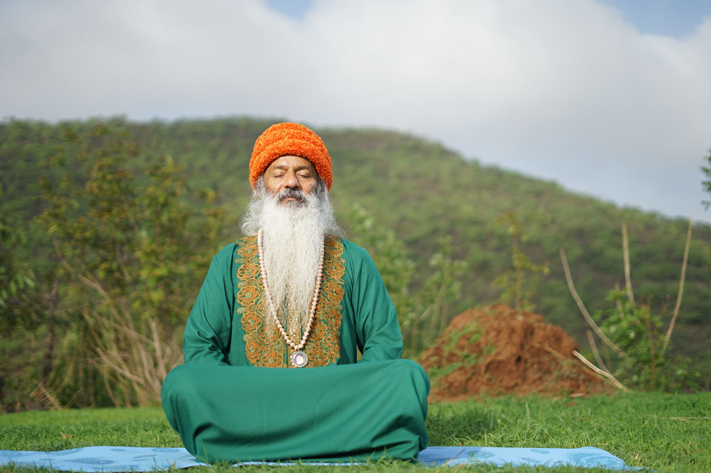
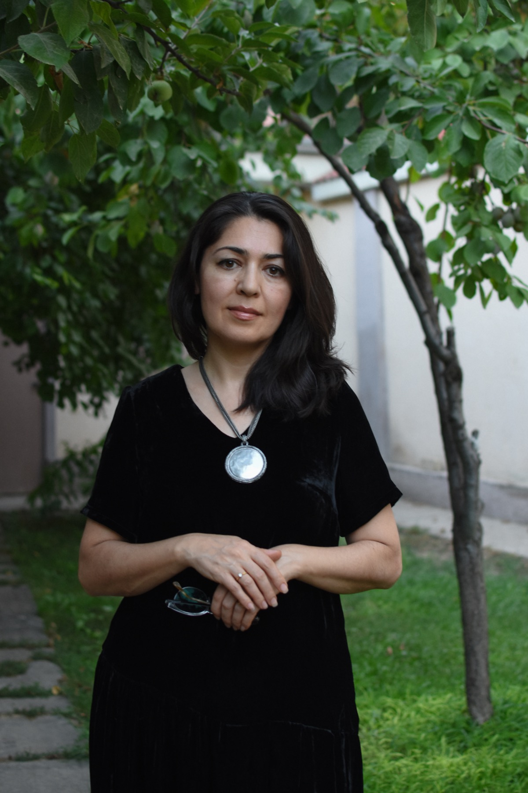

Relief from stress
Release accumulated tension and return to a calmer, more relaxed state.
November 12-15, 2026 · Lake Junaluska, North Carolina
Four days of meditation, silence, inquiry, and celebration. Open to beginners and experienced meditators alike.
The Retreat
Due to strong interest from Osho communities across the U.S., Canada, and Latin America, the main retreat has moved to November. This gives the gathering more space to come together in a grounded, connected, and truly alive way.
November in North Carolina offers something unique: nature begins to slow down, colors deepen, and the environment naturally supports introspection, meditation, and inner work. This retreat is not just a program. It is a field we are creating together.
Osho active meditations are designed for real people living real, busy lives.
Release accumulated tension and return to a calmer, more relaxed state.
Let go of inner pressure and reconnect with a sense of ease and well-being.
Move beyond mental noise into a more grounded, peaceful awareness.
Feel lighter, more alive, and more connected to your natural flow.
Clear your mind and approach daily life with greater freshness and perspective.
Share meditation, silence, and celebration with others in a welcoming atmosphere.
A living meditation field in North Carolina since 2012.
The Osho Meditation Group Raleigh has been a living presence for meditation and inner exploration in North Carolina since 2012. What began as a small circle of friends sitting together in meditation has slowly grown into a warm and diverse community of seekers from across the region.
For more than a decade we have gathered regularly at 6608 Rest Haven Dr, Raleigh, NC, sharing Osho's unique and transformative meditation techniques. Through weekly sessions, special events, and community gatherings, we have created a welcoming space where people can slow down, reconnect with themselves, and experience the joy of meditation in a supportive environment.
Our group is made up of both long-time Osho sannyasins and members of a newer, younger generation discovering Osho for the first time. Some among us had the good fortune to sit in Osho's physical presence; others have come to his work more recently through books, recordings, and meditation experiences.
This blend of old and new gives our community a unique flavor, rooted in tradition, yet fresh, open, and evolving. We do not represent any institution or formal organization. We are simply a group of people who have found great value in Osho's approach to meditation and wish to share it with others in a simple, down-to-earth way.
Our focus is on practicing the active and dynamic meditation methods developed by Osho, including Dynamic Meditation, Kundalini Meditation, Nadabrahma, Nataraj, No-Mind, and White Robe Brotherhood Meditation.
These techniques are designed specifically for modern life, helping release stress, emotional tension, and mental overload, so that natural silence and awareness can emerge. We meet not to follow a belief system, but to experience meditation directly in movement, silence, celebration, and community.
The Osho Meditation Group Raleigh is open to people of all backgrounds, cultures, and spiritual paths. No previous meditation experience is required. Whether you are curious, skeptical, seasoned, or simply in need of a quiet place to breathe, you are welcome here.
Our intention is to provide a safe and supportive space for meditation, share Osho's methods with sincerity and respect, create community based on awareness, friendship, and authenticity, and support personal growth and inner transformation.
Over the years our community has dreamed of creating a larger gathering where people from North Carolina and beyond could come together in a deeper way. The annual Osho Meditation Retreat in the mountains of North Carolina is a natural flowering of this intention.
This retreat brings together facilitators and participants from different parts of the United States, and hopefully from around the world, to share several days of meditation, silence, music, and celebration.
We are not teachers. We are not gurus. We are simply fellow travelers walking the path of meditation together. In the words of Osho, meditation is not something to believe in; it is something to experience. We invite you to join us in that experience.
Members of the NC Osho community support the retreat and local programs with time, energy, experience, love, and joy.


Osho Center Leader

Webmaster

Music DJ

Honorable Member

Community member

Retreat manager
Schedule
A balanced flow of active meditation, silence, connection, and celebration.
Meditation
Osho active meditations support release through breath, sound, dance, and awareness. After movement, silence can come naturally.
These are the core practices currently described on the Wix site.
A five-stage meditation using breath, movement, expression, stillness, and celebration to break old patterns and open a path to deeper stillness.
Gentle shaking, spontaneous dancing, and silent witnessing help release accumulated tension and let energy move naturally.
Dance becomes meditation. There are no steps to follow, only the invitation to let go and move as energy guides you.
A humming meditation that brings body, mind, and energy into harmony through sound, slow hand movements, and silence.
A meditative approach focused on transitions of consciousness, letting go of habitual patterns, and deepening presence.
This practice helps settle the restless thinking mind by guiding participants through letting go of thoughts and experiences in a gentle, step-by-step way. It supports witness consciousness and inner spaciousness, especially for people who struggle with overthinking or mental restlessness.
An evening group meditation rooted in shared presence, silence, openness, and collective stillness.
Speaker and workshop content migrated from the current Facilitators page.

Swami Shailendra Saraswati was born on June 17, 1955, in Gadarwara, India, and is Osho's fifth brother. A medical doctor by training, he served at Osho's Pune ashram hospital and later lived in Rajneeshpuram.
For decades he has translated and edited Osho's works, led meditation camps, and delivered more than 1,000 talks across India, Nepal, and internationally, with his teachings available in books and audio-video recordings. Known for his clear and accessible presentation of Osho's wisdom, he continues to share meditation practices both in person and online.
At the retreat: Swamiji will offer morning discourse sessions from 10:00-11:00 AM on Friday and Saturday, presented in an interactive Q&A format.
Swami Bodhi Soham is a meditation teacher, intuitive coach, and Daoist practitioner who blends ancient wisdom with modern embodiment. Originally from Uzbekistan, his journey into meditation began through personal healing and led him to train in Osho meditations, Taoist alchemy, Qigong, Sufi traditions, and internal martial arts.
Now based in North Carolina's Triangle area, he guides seekers through grounded, compassionate practices that cultivate awareness, vitality, and authentic presence.
This experiential two-day workshop invites men into a deeper relationship with their sexual energy, not as impulse or performance, but as life force.
Through breathwork, meditative awareness, and embodied energy practices, participants explore abdominal breathing and nervous system regulation, the Inner Smile and Six Healing Sounds, pelvic floor awareness, testicle breathing, energetic circulation, and the Microcosmic Orbit.
This workshop is not about suppression or control; it is about refinement. Sexual energy becomes fuel for presence, strength, creativity, and heart-centered leadership.

Zumrad Masar is a psychotherapist and experiential group facilitator specializing in dreamwork, somatic awareness, and integration of expanded states.
She weaves psychological insight with meditation and embodied practices, guiding participants toward deeper self-awareness and inner alignment.
Dreams are not random images of the night; they are movements of consciousness. In this experiential workshop, participants explore dreams as a pathway to meditation and self-awareness.
Through guided inquiry, embodiment practices, and witnessing meditation, participants learn how to move beyond analyzing dreams and instead enter into direct relationship with their symbolic landscape.
Blending psychological insight, somatic awareness, and contemplative practice, this workshop invites participants to experience dreaming not as something to decode but as something to awaken within.
Registration is handled through the website. Lodging and meals are booked directly with Lake Junaluska after registration.
Available until March 15, 2026. Includes full four-day retreat program, guided meditations, workshops, evening programs, facilitator support, and use of retreat spaces.
Book on WixMarch 16-April 20, 2026. Registration includes the retreat program only; lodging and meals are arranged separately with the venue.
How to RegisterAfter April 20, 2026, if space remains. Registration remains transferable after the refund deadline.
Refund Policy| Full retreat package | $775-$1,095 |
|---|---|
| Local participant with meals | $415-$555 |
| Commuter registration only | $295-$395 |
| Friday Pass | $120 |
|---|---|
| Saturday Pass | $140 |
| Sunday Pass | $95 |
| Friday + Saturday | $225 |
| Saturday + Sunday | $215 |
| Evening Satsang & Music | $35 |
A calm scan of the retreat elements without asking visitors to read too much at once.
The practical details should feel reassuring, especially for first-time retreat participants.
Lake Junaluska Conference & Retreat Center, near Asheville and Waynesville, North Carolina.
Closest airport: Asheville Regional Airport (AVL), about 30-35 minutes or 34 miles away. Charlotte Douglas International Airport (CLT) is about 2 hours 15 minutes or 115 miles away.
Accommodation is provided by Lake Junaluska Conference & Retreat Center. Typical lodging options include shared rooms at approximately $120-$150 per night and private rooms at approximately $150-$180 per night.
Healthy vegetarian meals are available onsite. A full meal plan is typically $120-$160. Dietary restrictions such as vegan, gluten-free, or nut-free can be shared in advance.
Registration
Step one is retreat registration. After you register, you receive the Lake Junaluska booking link for room and meal plan registration.
Current booking links are preserved while we prepare the new site flow.
These preserve the live Wix service links during the migration.
Short answers for the questions people usually need before they feel ready to register.
No. Beginners are welcome. The schedule includes active and silent meditations, with guidance and space to participate at your own pace.
Comfortable loose clothing, layers for mountain weather, walking shoes, a water bottle, toiletries, journal, and any personal items that support your stay.
No. Retreat registration covers the program only. Meals and lodging are booked separately through Lake Junaluska Conference & Retreat Center after you register. Vegetarian meal plans are available for the full retreat or individual days.
Lake Junaluska offers a variety of accommodations including shared rooms, private rooms, and upgraded options. After registration, you receive a direct link to reserve lodging and choose the option that fits your budget and comfort.
Yes. Single-day and two-day passes are available for people unable to attend the full program. These passes include access to all sessions on selected days. Lodging and meals are not included.
Yes. Partial scholarships and work-exchange opportunities may be available. Discounts apply only to the retreat registration fee, not to lodging or meals.
Yes. The schedule balances activity and stillness, with meditation sessions, silent sitting periods, personal free time, and quiet hours each evening.
No. Osho meditations are non-religious practices focused on awareness, presence, and self-exploration. People of all beliefs and backgrounds are welcome.
Comfortable, loose clothing is best. Red clothing or sannyas robes are recommended for daytime meditations and workshops. White clothing is encouraged for evening White Robe Brotherhood meditations.
Retreat registration is refundable, minus a $50 processing fee, until April 10, 2026. After that date, registration is transferable but not refundable. Lodging cancellations follow Lake Junaluska policies.
Yes. Many attendees carpool or coordinate airport pickups. If you want to connect with others for travel arrangements, contact us and we can help facilitate communication.
Lake Junaluska has accessible facilities. If you have specific needs, contact us in advance so we can help make appropriate arrangements.
Pets are not permitted inside retreat facilities. Service animals are welcome according to ADA guidelines.
Yes, Wi-Fi is available at Lake Junaluska, though participants are encouraged to use the retreat as an opportunity to unplug and be fully present.
Retreat sessions are generally not recorded in order to maintain privacy and presence. Participants are encouraged to take notes for personal reflection.
Get in Touch
If you need help choosing the best option, arranging travel, requesting scholarship/work-exchange support, or understanding the lodging process, reach out.
Email: oshonc369@gmail.com
Location: Lake Junaluska, NC, USA
Future Platform
Osho Sage, the global centers map, and your Substack can become part of the same calm ecosystem without overwhelming the first visit.
A gentle chat companion for questions about life, meditation, awareness, relationships, work, silence, and retreat preparation.
Preview Osho SageA community space for participating centers, organizer-confirmed events, and meditation communities.
Participating CentersA calendar for retreats, meditations, workshops, online circles, and community gatherings.
View Events DraftYour latest writing can appear here while Substack remains your publishing home.